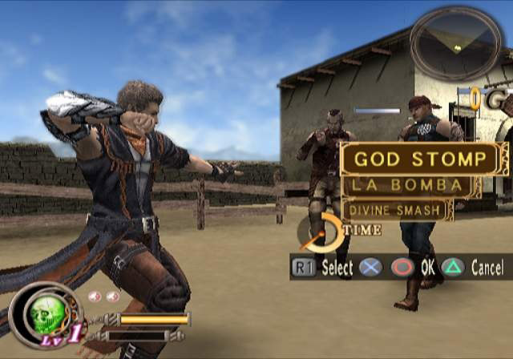

God Hand

Clover's final game, a legendary 3D beat-em-up.
A truly one-of-a-kind game, the product of some of Capcom's best at the peak of their creative output.
The game received notoriously bad reviews from those who did not understand it or could not overcome its difficulty. It maintains a strong cult following among action game fans.
- Studio: Clover
- Publisher: Capcom
- Director: Shinji Mikami
- Year: 2006
Fun Facts
- This title was Mikami's next directorial effort following the industry-defining Biohazard 4.
- Clover was already slated to go under following the underperformance of previous title Okami.
- The title is one of the rare games in its genre to not use the right analog stick of the gamepad for camera control, instead dedicating it to directional dodges and weaves.